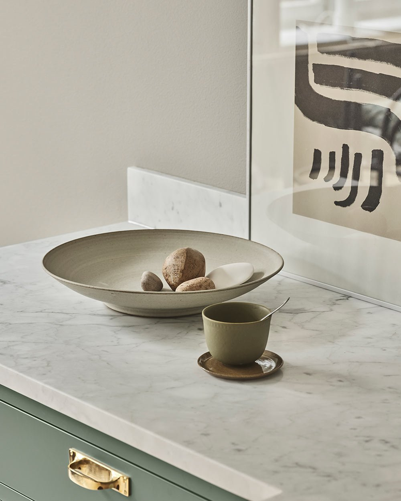

Limestone worktop
Limestone comes in a variety of designs, from very tranquil to more vibrant with a lot of variations and patterns. A kitchen with a limestone worktop feels both exclusive and genuine and can be easily matched with both wood or painted kitchens. The worktop can also be matched with a backsplash or even extend further up the wall for added character in the kitchen. However, limestone is sensitive to acids and needs to be impregnated a bit.
Read more about how you can take care of your worktop.
Marble worktop
A marble worktop is a classic choice for the kitchen. The beautiful veining of marble enhances the atmosphere in the kitchen and adds a personal touch. A marble countertop, like limestone, needs to be impregnated, but with regular care, marble remains virtually indestructible, making it an excellent choice for kitchen environments.
In recent years, marble has become even more popular, not only for work surfaces but also for cladding walls and kitchen islands, where more and more people are choosing contrasting and colourful marble varieties, giving the kitchen a luxurious feel and extra character.
Marble - Verde Alpi
Marble - Calacatta Vagli Oro

Marble - Carrara
Marble - Nero Marquina
Marble - Arabescato Corchia
Marble - Estremoz
Marble - White Creek
Marble - Scarpa
Granite worktop
Granite is one of the most durable natural materials and withstands heat, scratches, and impacts very well. Granite comes in several colours and patterns, such as the beautiful Lemon Ice. Granite is vibrant in its pattern and adds a personal character to the kitchen.

Granite - Lemon Ice
Granite - Black
Terrazzo worktop
Terrazzo is a composition of various stone types, including crushed marble combined with cement. The result is a durable and resilient material reminiscent of natural stone and available in virtually any colour combination. With Terrazzo, your kitchen gains a personal expression.
Below, you'll find a selection of Terrazzo worktops.
Terrazzo - Multicolored
Terrazzo - Calacatta
Stainless steel worktop
Stainless steel is a timeless material that remains a favorite over the years. A stainless-steel worktop is a perfect choice for all types of kitchen styles and can be customized in various thicknesses, with a raised edge at the back and in different finishes to suit your taste. We collaborate with companies like Purus and Decosteel when it comes to stainless steel worktops.
The stainless-steel slab can be manufactured without visible joints, both in corners and around integrated sinks in the same material. The material is not only beautiful but also practical; it is easy to clean and can withstand heat.
Composite worktop
Choosing composite stone as the material for your kitchen can be advantageous for several reasons. Firstly, composite stone is known for its resistance to stains, which means it stays beautiful for longer and requires less maintenance. The robust hardness of composite stone also makes it resistant to scratches and damage from kitchen utensils, providing long-lasting use without visible signs of wear.
Furthermore, composite stone from brands like Cosentino offers a wide range of colours and patterns, making it possible to find a style that perfectly complements your kitchen design and personal taste.
Quartz Composite - Bianco Drift
Composite - Fusion Taupe
Granite ceramic worktop
A granite ceramic worktop is the ultimate choice for those seeking the most durable material on the market. This impressive substance consists of a composition of sand, clay, stone, and natural pigments, which are then manufactured at extremely high temperatures.
Ceramic is easy to clean and has unparalleled durability; its hardness even surpasses granite, meaning it is resistant to scratches and wear. Additionally, hot frying pans and oven dishes can be placed directly on the surface without causing damage.

Granite Ceramic - Norrvange Bricmate
Granite Ceramic